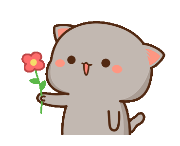

Infelizmente eu tava sem capacete quando bati os olhos em você. Mas sinceramente, por você eu sou pior que Neymar, porque por ti não tenho quedas, tenho precipípios e me jogo sem paraquedas mesmo. Eu não tenho culpa por você ser tão hipnotizante o suficiente pra me fazer te querer tanto. E sim, eu quero você:
Quero sua versão gótica, quero sua versão delicada. Eu quero você estressada, quero você calma. Quero você louca, quero você sensata. Eu quero a sua versão de garota mimada, também quero sua versão decidida. Eu quero você poderosa, quero você sensível. Eu quero você gostosa e arrumada, mas eu também quero a sua versão descabelada que acabou de levantar da cama. Eu quero os teus beijos e os teus cafunes. Eu te quero como garota, te quero como mulher. Quero os teus abraços, quero teu colo, quero teu calor. Quero teu cheiro, quero teu carinho, quero teu amor. Quero sua versão atrevida, quero você "santa". Eu quero você, eu desejo você. Eu te quero em todas as suas versões e em todas as suas fases. Quero todos os seus detalhes, quero apreciar todos eles.
Eu quero você.
O seu sorriso alivia qualquer dor e descomplica qualquer angústica que sinto no meu peito. E se por te beijar eu tivesse de ir ao inferno depois, eu faria isso. Assim eu poderia me gabar aos demônios por ter estado no paraíso sem ao menos ter entrado nele. Não me importo muito com isso.
Meu mundo é você;
Meu paraíso é você;
Meu lar é você.
Nem as palavras mais bonitas, os textos mais longos e os sorrisos mais bobos demonstrariam tudo o que eu sinto por você. Há uma constelação nos teus olhos que faz o meu universo querer colidir com o seu, e uma melodia na sua voz que faz querer me tornar poeta. Se eu tivesse que escolher entre te perder por ter enjoado de mim, ou te perder por não ter demonstrado o suficiente, eu escolheria a primeira opção. Você é especial demais, completamente simples e fácil de amar. Prefiro demonstrar tudo o que conseguir e te ver feliz do que ter ver ir embora por não se sentir amada o suficiente. Na verdade, eu preferiria não ter que te perder.
Eu sei, eu sei. Eu provavelmente já falei isso tudo antes. Eu só quero ter certeza de que meu anjinho não se esqueceu disso.
Garota, você é a coisinha mais preciosa que existe

Mais um para a listinha, continue anotando.
Código